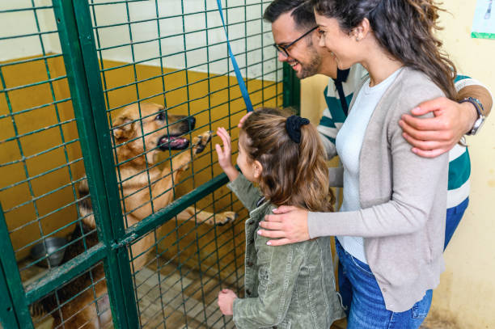
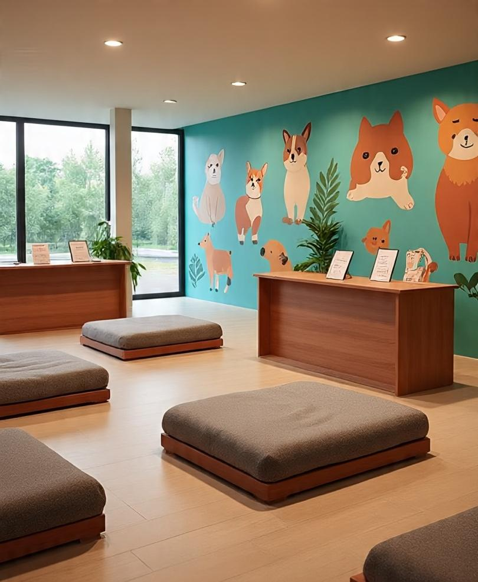

Nuestros Programas e Iniciativas
En Patitas Unidas trabajamos diariamente a través de diversos ejes estratégicos para mejorar la calidad de vida de los animales en situación de vulnerabilidad.
1. Programa de Adopción Responsable y Seguimiento

Descripción: Esta iniciativa busca encontrar hogares definitivos para nuestros rescatados mediante un riguroso proceso de selección. Realizamos un acompañamiento post-adopción para asegurar que la adaptación sea exitosa, garantizando que reciban el cariño y los cuidados sanitarios necesarios.
Dirigido a: Personas o grupos familiares con un alto sentido de la responsabilidad y tiempo suficiente para la socialización.
¿Cómo participar?: Si estás interesado en darle un hogar a uno de nuestros animales, podés iniciar el proceso aquí:
Quiero participar de este programa
2. Campañas de Castración y Salud Preventiva

Descripción: Entendemos que la castración es la herramienta más efectiva para controlar la sobrepoblación. Ofrecemos cirugías de esterilización gratuitas y campañas de vacunación antirrábica en distintos puntos de la comunidad para reducir el abandono.
Dirigido a: Vecinos con mascotas a cargo que no cuenten con recursos económicos y rescatistas independientes.
¿Cómo participar?: Para solicitar un turno o consultar próximas fechas, hacé clic en el enlace:
Quiero participar de este programa
3. Red de Colectas Solidarias

Descripción: Este programa centraliza la recepción de recursos materiales como alimento balanceado, mantas e insumos médicos para el funcionamiento diario del refugio.
Dirigido a: Toda la comunidad que desee colaborar con recursos materiales.
¿Cómo participar?: Si tenés insumos para donar, avisanos completando tus datos en el formulario:
Quiero participar de este programa